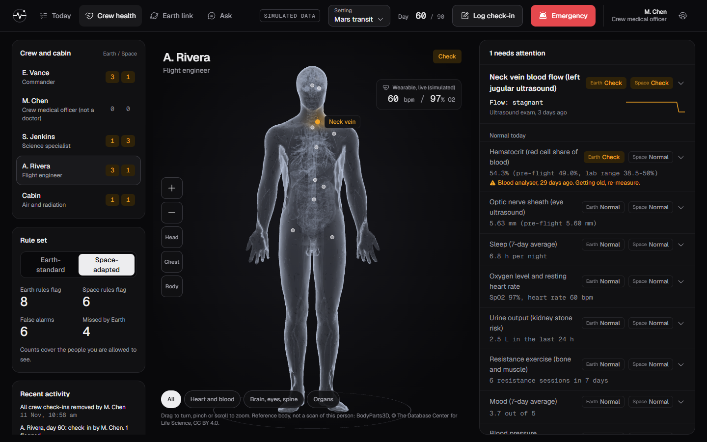
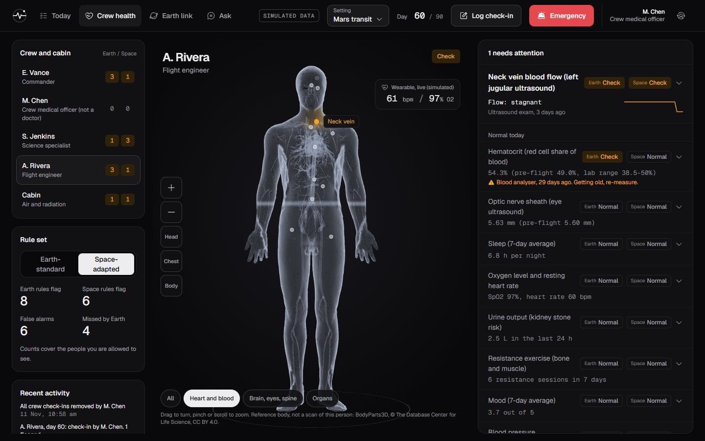
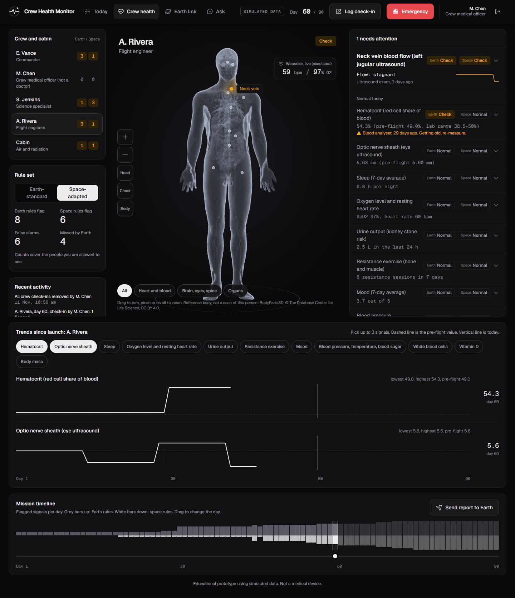
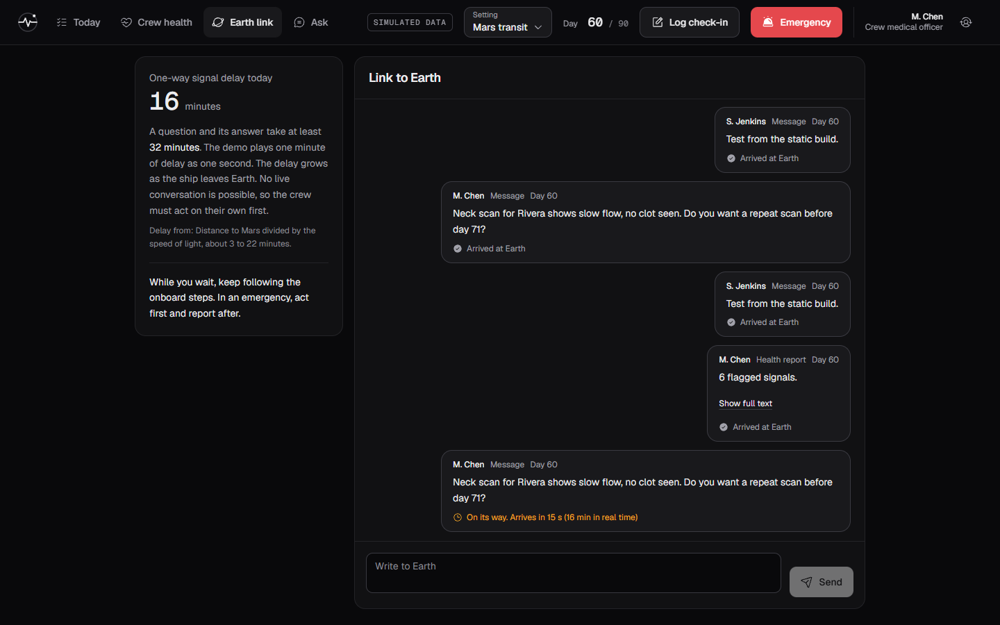

Health monitoring for a crew that cannot call a doctor. It checks the same readings with Earth rules and with space rules, and shows where the two disagree.
Live demo
crew-health-monitor.vercel.app
Code
github.com/AdityaK0804/ Crew-Health-Monitor
To enter
Choose a person. No password.
Read this first. Every person and every reading in this prototype is simulated. It is a concept demonstrator built for a hackathon. It is not a medical device and has not been clinically validated.
Project overview1
Why we built it
Far from Earth, the normal ranges stop working
On the way to Mars a message can take 22 minutes each way. There may be no doctor on board. And the body changes in space, so the reference ranges on an Earth lab report can mislead a crew in two ways.
False alarm
Hematocrit rises 10 to 12% in flight
An Earth range calls that dehydration. In space it is expected, because plasma volume drops in weightlessness.
Earth: CheckSpace: Normal
Missed
Cabin CO2 that passes Earth limits
It is under the workplace limit, yet crews get headaches. On the station each extra 1 mmHg doubled the odds.
Earth: NormalSpace: Check
Missed
1.6 litres of urine a day
Normal on Earth. In space, bones shed calcium into the urine, so NASA wants 2 litres to avoid kidney stones.
Earth: NormalSpace: Check
The idea: one set of data, two sets of rules
Earth-standard rules
Space-adapted rules
A normal spaceflight change
False alarm
Explained as expected
A concern that only matters in space
Missed
Flagged, with what to do next
Where the rule comes from
Lab reference range
A published spaceflight source, linked on screen
What it compares you with
The average person on the ground
Your own pre-flight values and past missions
The honesty rule. Any threshold we could not trace to a published source is labelled “Demo parameter” on screen. Nothing unconfirmed is shown as fact.
Crew Health Monitor2
What we made
Crew health: where, what next, and why

The main screen. Crew and cabin on the left, a 3D body in the middle, today’s signals on the right. Colour appears only where something needs attention.
Where
A 3D body built from real, openly licensed anatomical models, male and female. The part behind a flagged signal glows and the camera moves to it. Zoom with the scroll wheel or by pinching on a touch screen.
What next
Each signal opens with a “Do this next” box in plain words, with a button to log a new measurement, or to open the emergency steps when it is urgent.
Why
Then the reason, both verdicts, what the measurement is and how to take it, which NASA risk it belongs to, where the reading came from, how old it is, and the source of the rule.

Body systems. Switch between all systems, heart and blood, brain eyes and spine, and organs.

Trends since launch. Up to three signals against the crew member’s own pre-flight value.
Crew Health Monitor3
What it watches
Fifteen signals, each checked by both rule sets
Thirteen for each crew member and two for the cabin. Each is tagged with one of NASA’s five hazards of spaceflight and links to NASA’s page for that risk.
Signal
Do the rule sets differ?
Where the rule comes from
Hematocrit
Yes
Published study of ISS crews; lab range from NASA open data
Optic nerve sheath (eye)
Yes
Published review; the change threshold is a demo parameter
Neck vein blood flow
Explanation differs
Published study of 11 ISS crew
Headache with cabin CO2
Yes
Published ISS study and NASA standard
Urine output (kidney stones)
Yes
NASA renal stone studies
White blood cells (immune)
Yes
Lab range from NASA open data; in-flight rise published
Vitamin D (nutrition)
Yes
NASA flight surgeon protocol and flight studies
Resistance exercise (bone)
Yes
NASA bone loss figure; weekly cut-off is a demo parameter
Cabin CO2
Yes
NASA standard, 3 mmHg
Radiation dose
Yes
Measured rates and NASA’s 600 mSv career limit
Sleep
No
Demo parameter
Oxygen level and heart rate
No
Demo parameter
Mood
No
Demo parameter
Body mass (food intake)
No
Demo parameter
Blood pressure, temperature, blood sugar
No
Demo parameter, ordinary Earth limits
Where the readings come from
A simulated device feed: wearables report every day, ultrasound every 14 days, blood tests every 30. Every value shows its source and its age, and warns when it is getting old. A check-in form is the manual fallback, and can carry a photo or ultrasound image.
Mission setting
Space station, Moon surface or Mars transit. The setting changes the signal delay to Earth and the radiation rate, each with a source. On the Moon it also applies a smaller fluid shift, labelled as an assumption.
Crew Health Monitor4
A day on board
Built for the routine, not only for alarms
Today. What the signed-in crew member needs to do: exams that are due or getting old, signals to re-check, and a note in their own words.

Earth link. Messages and health reports travel with the real signal delay for the mission, with a countdown. Earth sees only what the crew sends.Ask the handbook. No AI model and no connection. It answers only from the rules and today’s readings, shows the source, and says “I don’t have that” when it does not know.Emergency. Large timed steps. Each one is marked as coming from a published source or as demo wording. The run is saved and sent to Earth.
Crew member
Sees their own health data.
Medical officer
Sees every crew member.
Flight surgeon on Earth
Sees only what the crew sent, after the delay.
Privacy is enforced by the server in a local run. The public demo link has no server, so roles are for show there, and the app says so in a banner.
Crew Health Monitor5
Why it helps
Who benefits, and how
The crew
Fewer false alarms to worry about, real concerns caught earlier, and plain instructions when Earth cannot answer in time. They do not need to be doctors to follow it.
Flight surgeons
Reports arrive with the reading, its source, its age and the rule that flagged it, so a doctor on Earth can check the reasoning instead of starting from nothing.
People on Earth
The same idea fits anywhere a non-doctor must decide before help arrives: remote clinics, ships, polar stations. Spaceflight changes also resemble accelerated ageing, which is why space agencies study them.
Why rules, and not a prediction model
0
public in-flight datasets
Day-by-day astronaut vitals are not public. A model trained on invented data would only learn the invention.
44 min
for a question and its answer
A spacecraft cannot wait for a cloud service. The rules run in the browser with no connection.
100%
of flags show their reason
Every flag gives its reason and its source, so the crew and the flight surgeon can check it. A score cannot be audited the same way.
How it answers the challenge
The challenge asks for
Where we answer it
A visual tool to assess your own health
3D body with clickable markers, colour-coded signals
Guidance on what to do
“Do this next” on every signal, emergency walkthroughs
Do not assume astronauts know how to assess their health
Plain explanation of each measurement, and the Ask tab
Prompts to take measurements, charts over time, colour coding
Today tab, trend chart, traffic-light levels
Different environments
Space station, Moon surface and Mars transit
Crew Health Monitor6
Under the surface
How it is built, and what it is not
1
Readings come in
A simulated device feed, plus check-ins, notes and images from the crew.
2
One rule file checks them
Plain functions with 25 automatic tests. The server and the screens use the same file, so there is one copy of the rules.
3
Screens explain them
3D body, today’s tasks, Ask, emergency steps and reports to Earth.
Built with React, TypeScript, Vite, Tailwind, Motion and three.js. The server and database use only what ships with Node, so nothing else has to be installed or paid for.
Real
The published sources behind each rule
Lab ranges and pre-flight blood values from NASA’s open data (Inspiration4 crew)
Radiation rates measured on the station, the Moon and the way to Mars
The body and organ models
Simulated
The crew and their accounts
Every day-by-day reading
The device feed and its schedules
Emergency steps marked “demo only”
What it would take to be real
Real device data in place of the simulated feed
The agency’s own sign-in system and encryption. Today anyone can enter as any demo person
Clinical validation of every threshold, including those with a published source
Measured data for long stays in Moon gravity, which does not exist yet